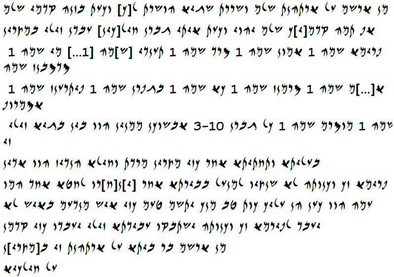

Çukurovalılarla ilgili Mevzu - Arşm Mektupları - TAD A6.7
Bu yazı daha önceki blogumdan alıntıdır.
Arşm Mektupları – TAD A6.7
Porten ve Yardeni, TAD A6.7'den uyarlanmıştır / Reproduced from Porten and Yardeni TAD A6.7
Aşağıdaki resim asıl yazının neye benzediğini örnekleme amacıyla konulmuştur, filolojik içeriği aynı olmakla beraber papirüsün fiziksel görünümüyle alakası yoktur.
İbranice Harf Çevirisi / Hebrew Transliteration
מן ארשם על ארתהנת שלם ושררת שגיא הושרת ל[ך] וכעת בזנה קדמי שלם אף תמה קדמ[י]ך שלם יהוי וכעת איתי גברן חיל[כין] עבדן זילי במצרין פרימא שמה 1 אמון שמה 1 סרד שמה 1 תענדי [ש]מה [1...] מי שמה 1 סדסבנז שמה א[...]ם שמה 1 סרמנז שמה 1 כא שמה 1 בגפרן שמה 1 פיתרענז שמה 1 אסמרוף שמה 1 מוסרם שמה 1 כל גברן 3-10 אבשוכן ממנין הוו בין בגיא זילי זי בעליתא ותחתיתא אחר כזי מצרין מרדת וחילא הנדיז הוו אדין פרימא זך וכנותה לא שנציו למנעל בבירתא אחר [י]נ[ח]רו לחטא אחד המו עמה הוו כען הן עליך כות טב מנך יתשם טעם כזי איש מנדעם באיש לא יעבד לפירמא זך וכנותה ישתבקו עבידתא זילי יעבדו כזי קדמן מן ארשם בר ביתא על ארתהנת זי ב[מצרי]ן על חילכיא ...
Latin Harfi Çevirisi / Latin Transliteration
mn ȝršm ʿl ȝrthnt šlm wšrrt šgyȝ hwšrt lk wkʿt bznh qdmy šlm ȝp tmh qdmyk šlm yhwy wkʿt ȝyty gbrn ḥylkyn ʿbdn zyly bmṣryn prymȝ šmh 1 ȝmwn šmh 1 srd šmh 1 tʿndy šmh 1... my šmh 1 sdsbnz šmh ȝ(...)m šmh 1 srmnz šmh 1 kȝ šmh 1 bgprn šmh 1 pytrʿnz šmh 1 ȝsmrwp šmh 1 mwsrm šmh 1 kl gbrn 3-10 ȝbšwkn mmnyn hww byn bgyȝ zyly zy bʿlytȝ wtḥtytȝ ȝḥr kzy mṣryn mrdt wḥylȝ hndyz hww ȝdyn prymȝ wknwth lȝ šnṣyw lmnʿl bbyrtȝ ȝḥr ynḥrw lḥyȝ ȝḥd hmw ʿmh hww kʿn hn ʿlyk kwt ṭb mnk ytšm ṭʿm kzy ȝyš mndʿm bȝyš lȝ yʿbd lpyrmȝ zk wknwth yštbqw ʿbydtȝ zyly yʿbdw kzy qdmn mn ȝršm br-bytȝ ʿl ȝrthnt zy bmṣryn ʿl ḥylkyȝ …
Çeviri / Translation
Ȝršm'dan ȝrthnt'e,
Önümdeki refah ve fazlasıyla gücü sana ve iş arkadaşlarına bununla yollatım, senin de önünde refah olsun. Ve şimdi, Çukurova'lı adamlar var, benim Mısır'daki kölelerim :
adı prymȝ 1 (tane) ; adı ȝmwn 1 (tane) ; adı srd 1 (tane) ; adı tʿndy 1 (tane) ; adı ...my 1 (tane) ; adı sdsbnz 1 (tane) ; adı ȝ(...)m 1 (tane) ; adı srmnz 1 (tane) ; adı kȝ 1 (tane) ; adı bgprn 1 (tane); adı pytrʿnz 1 (tane) ; adı ȝsmrwp 1 (tane) ; adı mwsrm 1 (tane) ;
hepsi erkek 13, baskıcı [tekstil işlerindeki ?](?) tayin edilmişler benim Yukarı ve Aşağı Mısır'daki konaklarımın arasında. Sonra, Mısır baş kaldırdığında ve ordu garnizon kurulu olduğunda, prymȝ ve iş arkadaşları kaleye girememişler. Sonrasında nefes nefese kalsınlar, kötü (olan) onları yakaladı, onlar onunlaymışlar. Şimdi eğer sana iyiyse, senden buyruk konsun şunun gibi: kişi prymȝ ve iş arkadaşlarına kötü şey yapmasın. Terk edilsinler, önceden olduğu gibi benim işimi yapsınlar.
Ȝršm, evin oğlu'ndan, Mısır'daki ȝrthnt'e
From ȝršm to ȝrthnt,
Peace and very much force I have caused to send to you and your associate(s) by this before me, peace also there before you shall be. And now, there are Cilician men, my slaves in Egypt :
prymȝ his name 1 ; ȝmwn his name 1 ; srd his name 1 ; tʿndy his name 1 ; ...my his name 1 ; sdsbnz his name 1 ; ȝ(...)m his name 1 ; srmnz his name 1 ; kȝ his name 1; bgprn his name 1 ; pytrʿnz his name 1 ; ȝsmrwp his name 1 ; mwsrm his name 1 ;
all men 13, presser(?) they have been appointed between my two estates that are in Upper and Lower Egypt. Afterwards, when Egypt revolted and the army was garrnisoned then prymȝ and his associates they haven't been able to enter into the fortress. Afterwards they shall pant, the bad locked them, with him they have been. Now if thus (is) good towards you, from you the order shall be placed, as follows, man shall not do something evil to that prymȝ and his associate. They shall be left alone. They shall do my work just as before.
From ȝršm, the son of the house to ȝrthnt that (is) in Egypt.
Kelimeler ve Çözümlemeleri / Vocabulary and Word Analysis
- b-byrtȝ
- b-, infra. + byrtȝ, d.i., v.f., tekil, hisar / byrtȝ, f.n., emph. f. singular.
- b-mṣryn
- b-, ilgeç, içinde, sayesinde / b-, prep. in, by (means of) + mṣryn Ö.i. Mısır / P.n., Egypt.
- b-znh
- b-, ilgeç, içinde, sayesinde / b-, prep. in, by (means of) + znh, y.i.z. ( yakındaki için işaret zamiri), bu, bunlar / n.d.p (near object demonstrative pronoun), this, these.
- bgprn
- Ö.i. (Özel isim) / P.n. (Proper noun)
- bgyȝ
- e.i. (eril isim), v.f. (vurgulu form), ikil, malikane, arazi / m.n., emp. f., dual, domain, estate.
- br bytȝ
- br-bytȝ unvan, Evin oğlu / title, son of the house
- byn
- ilgeç, arasında / prep. Between
- bȝyš
- önad, kötü, zararlı / adj. evil, bad
- Bʿlytȝ
- b-, ilgeç, içinde, sayesinde / b-, prep. in, by (means of) + ʿlytȝ, Ö.i., Yukarı Mısır/ P.n., Upper Egypt
- gbrn
- e.i., y.f. (yalın form), çoğul, erkek / m.n., abs. f., plural, men
- hmw
- kişi zamiri, 3. e.ç.k., onlar / personal pronoun, P3M, they
- hn
- takı, eğer / particule, if.
- hndyz
- belirteç, garnizon kurulu / adv. Garrnisoned
- hwšrt
- yšr fiili, ettirgen gövde, 1.t.k. (tekil şahıs), tm.v. (tamamlanmış veçhe), yollatmak / verb yšr, causative stem, S1 form, p.a. (perfect aspect), I caused to dispatch.
- hww
- hwh, olmak fiili, III.y, temel gövde, (3. e.ç.ş. eril çoğul kişi) tm.v., olmuşlar / hwh, verb to be, III.y, ground stem, ( P3M, plural 3. person masculin) p.a., have been
- ḥylkyn
- e.i., y.f., çoğul, Çukurovalı / m.n., abs. f., plural, Cilician
- kl
- hepsi, bütün / all, every, whole
- kwt
- belirteç, öyleyse, o halde / adverb, thus.
- kzy
- aynı andalık belirten bağlaç / conjunction, when
- kȝ
- Ö.i. (Özel isim) / P.n. (Proper noun)
- kʿn
- şimdi / now.
- lḥyȝ
- lḥy, sıfat, v.f., çoğul, kötü / lḥy adj., emp. f., plural, bad.
- lk
- l, ilgeç, e doğru / prep. to + k 2. e.t.ş. (eril tekil şahıs) soneki )) / ((S2M s.p.p, Single 2 masculine sufixed personal pronoun))
- lmnʿl
- ʿll fiili, temel gövde, mastar hali, tekil eril, girmek / ʿll verb, ground stem, infinitive, masculin singular, to enter.
- lpyrmȝ
- l, supra. + pyrmȝ, supra.
- lȝ
- olumsuzluk eki/ not .
- mmnyn
- mnh/y fiili, Pa''el gövdesi, sıfat-fiil, eril çoğul, tayin etmek / mnh/y verb, Pa''el stem, participle, plural masculine, to appoint.
- mn
- ilgeç -den /prep. (preposition) from
- mndʿm
- adıl, herhangi bir şey, bir şey/ pronoun, something
- mnk
- mn, supra. + k, supra.
- mrdt
- mrd fiili, temel gövde, dişi 3.tekil şahıs, tm.v., başkaldırmak / mrd verb, ground stem, feminine 3. person singular, p.a., to rebel.
- mṣryn
- supra.
- mwsrm
- Ö.i. (Özel isim) / P.n. (Proper noun)
- Prymȝ
- Ö.i./ P.n.
- Prymȝ
- Ö.i. (Özel isim) / P.n. (Proper noun)
- pytrʿnz
- Ö.i. (Özel isim) / P.n. (Proper noun)
- qdmn
- önceki / formerly
- qdmy
- qdm, ilgeç, ön / prep. before, in front of + y 1. t.k. soneki / S1 s.p.p
- qdmyk
- qdm, ilgeç, ön / prep. before, in front of + y, ? + k 2. e.t.k. soneki / S2M s.p.p.
- sdsbnz
- Ö.i. (Özel isim) / P.n. (Proper noun)
- šgyȝ
- belirteç-önad, çok, fazla / adverb-adjective, very, much, many
- šlm
- e.i., y.f., gönenç, barış, refah / m.n (masculin noun), abs. f., (absolute form), peace, welfare, prosperity
- šmh
- šm e.i. t.f. (tamlayan form) ad, isim / (m.n. ( masculine noun) (cons.f.)) name + h ( 3. e.t.k.) / (S3M s.p.p)
- Šnṣyw
- 4 sesli kök, temel gövde, tm. v., 3. e.ç.k., -e bilmek / 4 letter root, ground stem, p.a. P3M, to be able.
- srd
- Ö.i. (Özel isim) / P.n. (Proper noun)
- srmnz
- Ö.i. (Özel isim) / P.n. (Proper noun)
- ṭb
- sıfat, y.f., tekil, iyi / adj., abs. f., singular, good.
- tmh
- orada / there
- ṭʿm
- e.i., y.f. emir, buyruk / m.n., abs.f. command, order
- tʿndy
- Ö.i. (Özel isim) / P.n. (Proper noun)
- w-knwth
- w, supra. + knw.t (d.i. (dişil isim) t. f. meslektaş, iş arkadaşı ç.-t. çoğul veya tekil şekilsel bir ayrım yok / f.n. (feminine noun), cons.f. (construct form) associate / plu.-sing. plural or singular, no morphological difference + h 3. e.t.k. soneki / S3M s.p.p
- w-kʿt
- w-: ve, dahi, de / and, also + kʿt: şimdi/ now.
- wḥylȝ
- w, supra. + ḥylȝ, e.i., v.f., tekil, ordu / m.n., emp.f., sing. the army
- wšrrt
- w-, bağlaç ve, dahi, de / conjunction, and, also + šrrt, d.i. y.f., güç, kuvvet / f.n. (feminine noun), abs.f., strength.
- wtḥtytȝ
- w, supra. / tḥtytȝ, Ö.i., Aşağı Mısır / P.n., Lower Egypt
- yhwy
- hwh fiili, temel gövde, 3.t.k. g.-e. kipi (gereklilik-emir kipi), olmak / hwh, to be, ground stem, S3M, j.m. (jussive mood)
- ynḥrw
- nḥr fiili, temel gövde, g.-e. kipi, 3. e.ç.k., solumak, burnundan çekmek / nḥr verb, ground stem, P3M, j.m., snort, pant.
- yštbqw
- temel gövde dönüşlü yapı (tG), 3. e.ç.ş. tmm.v. terk etmek / external passive ground stem, imp. a. P3M, leave
- ytšm
- temel gövde dönüşlü yapı (tG), 3. e.t.ş. tmm.v., koymak, yerleştirmek / external passive ground stem, imp. a. S3M, set, place
- yʿbdw
- ʿbd, yapmak fiili, temel gövde 3.ç.ş. g.-e. kipi (gereklilik-emir kipi) / ʿbd, to make, ground stem, P3M, j.m. (jussive mood)
- zk
- u.i.z. (uzaktaki için işaret zamiri) o / (f.d.p. far object demonstrative pronoun) that, those
- zyly
- zy (i.z. (ilgi zamiri) ki o / (r.p.) relative pronoun, that, who, which + l, ilgeç, e doğru / prep. to + y, 1. t.k. soneki / S1, s.p.p
- ȝbšwkn
- e.i., y.f., kaçak/baskıcı (anlam belirsiz) / m.n., abs.f., presser/deserter( uncertain meaning)
- ȝdyn
- bağlaç/belirteç, sonrasında/ conjunction/adverb, then, at that time.
- ȝḥd
- ȝḥd fiili, temel gövde, tm.v., 3. e.t.ş., kitlemek, yakalamak, almak / ȝḥd verb, ground stem, p.a., 3SM.
- ȝḥr
- ilgeç, sonra /prep. Then, afterwards.
- ȝmwn
- Ö.i. (Özel isim) / P.n. (Proper noun)
- ȝp
- bağlaç, de, dahi / conjunction, also.
- ȝršm
- Ö.i. / P.n.
- ȝrthnt
- Ö.i. / P.n.
- ȝsmrwp
- Ö.i. (Özel isim) / P.n. (Proper noun)
- ȝyš
- e.i., y.f. erkek, kişi / m.n., abs.f. command, man, person
- ȝyty
- varlık belirten takı / particle of existence, there is/are
- ʿbdn
- e.i., y.f., çoğul, köle /m.n., abs. f., plural, slave
- ʿbydtȝ
- d.i. v.f., iş, hizmet/ f.n. emp. f., service, work
- ʿl-
- ilgeç, -e, üstünde / prep., on, toward, upon
- ʿlyk
- ʿl, ilgeç, -e, üstünde / prep., on, toward, upon + y, ? + k, supra.
- ʿmh
- ʿm, ilgeç, ile / prep. With + h, supra.
Yorumlar
Comments powered by Disqus